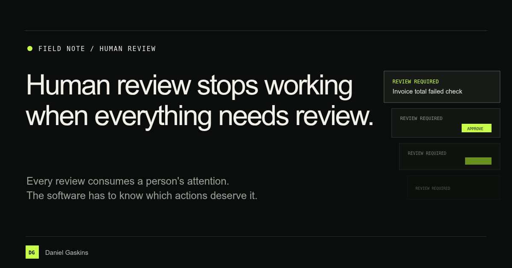
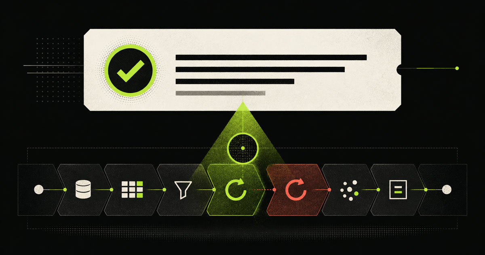

 August 5, 2026 Human review 5 minute read Human review stops working when everything needs review. Every review consumes a person's attention. A practical way to decide which AI actions should stop, what the reviewer needs to see, and where the software's authority ends. Read the field note
 August 3, 2026 Agent evaluation 6 minute read Your agent eval passed. Would it catch a broken tool call? Plant one known failure, rerun the same evals, and see whether the score changes. A practical introduction to mutation testing for agent tool use. Read the field note